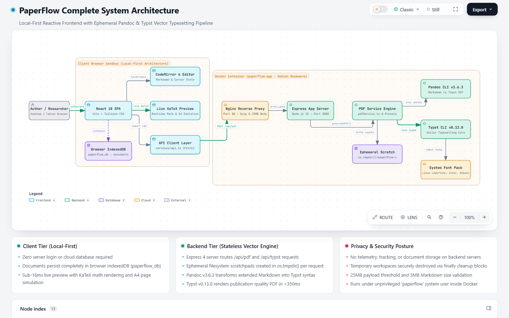
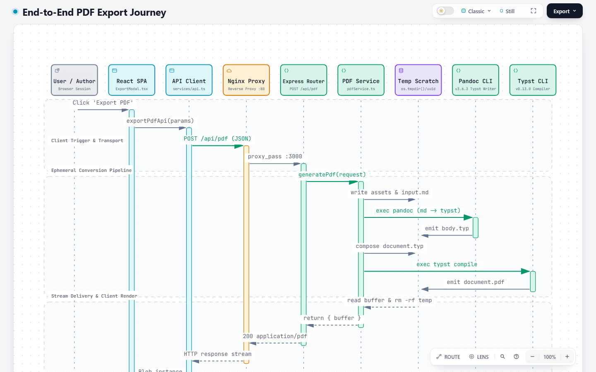
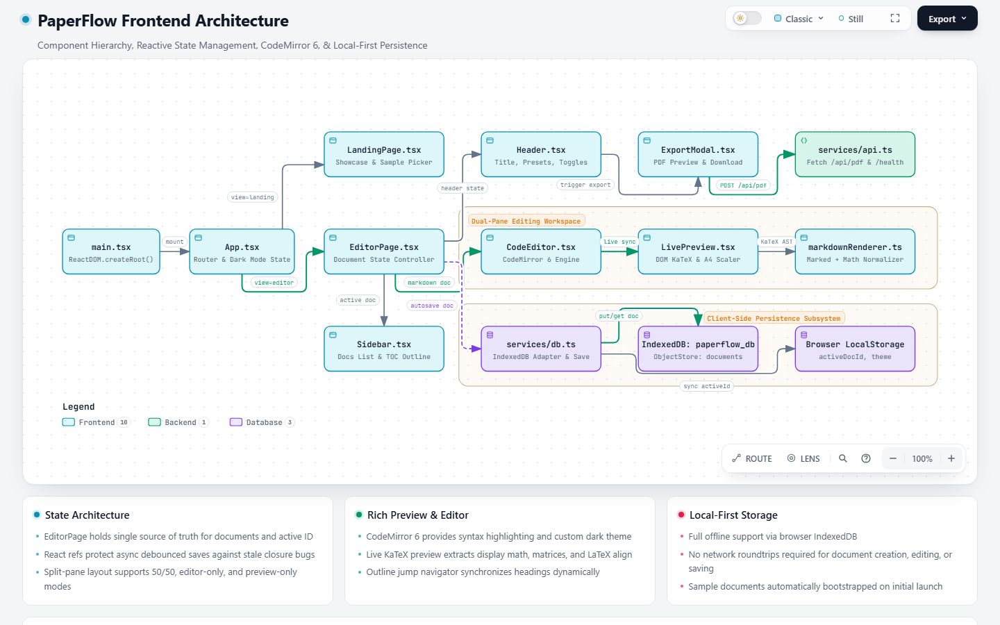
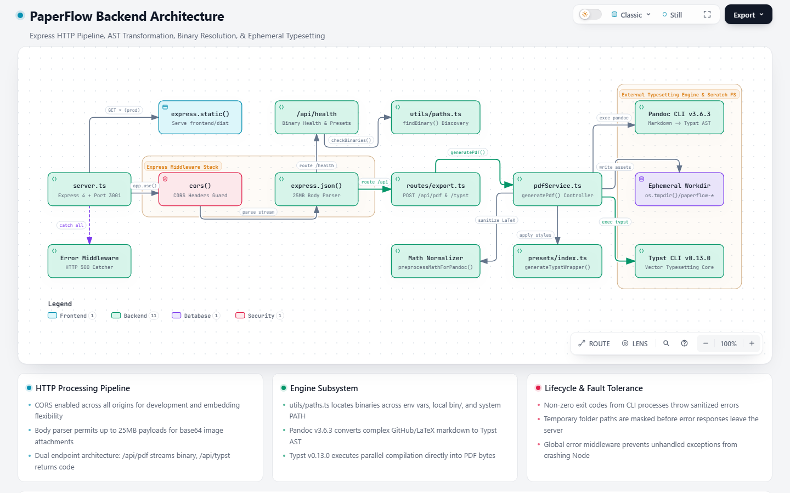
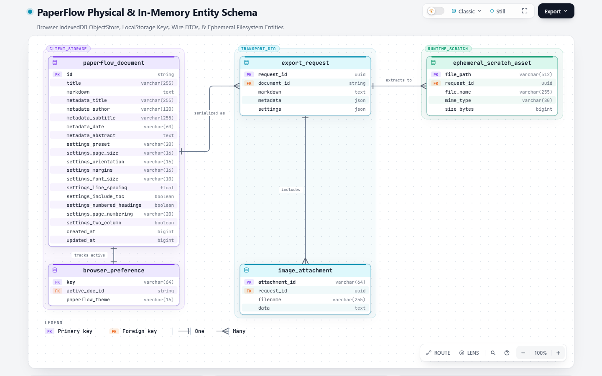
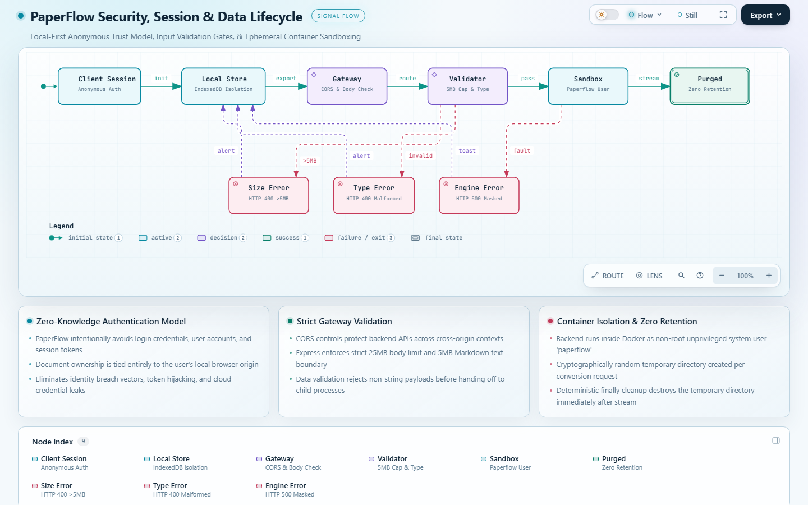
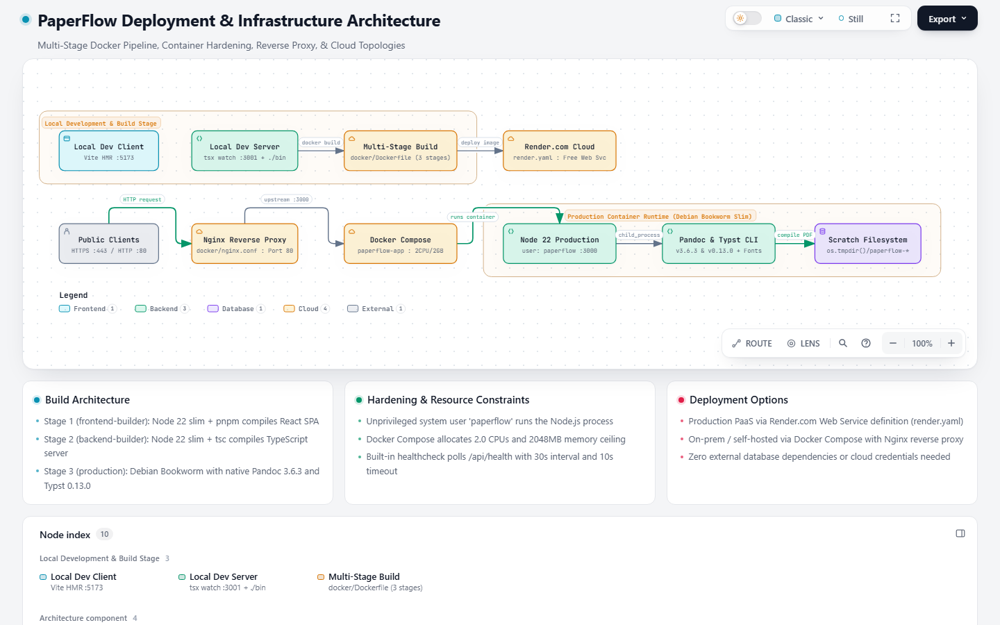
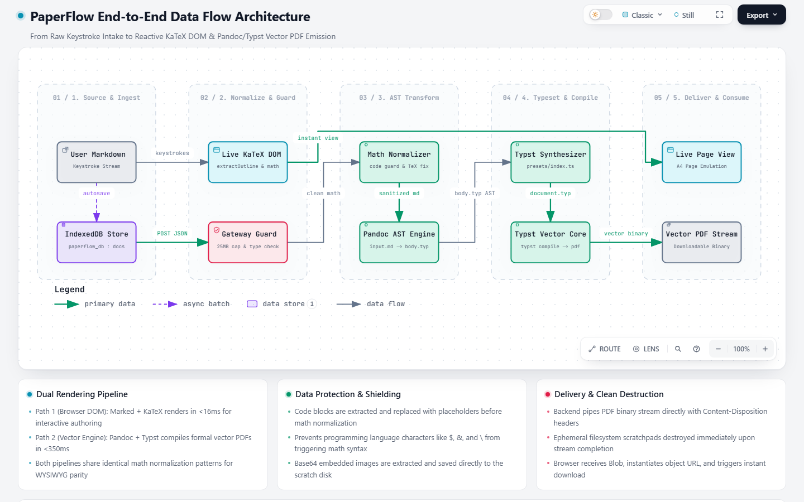
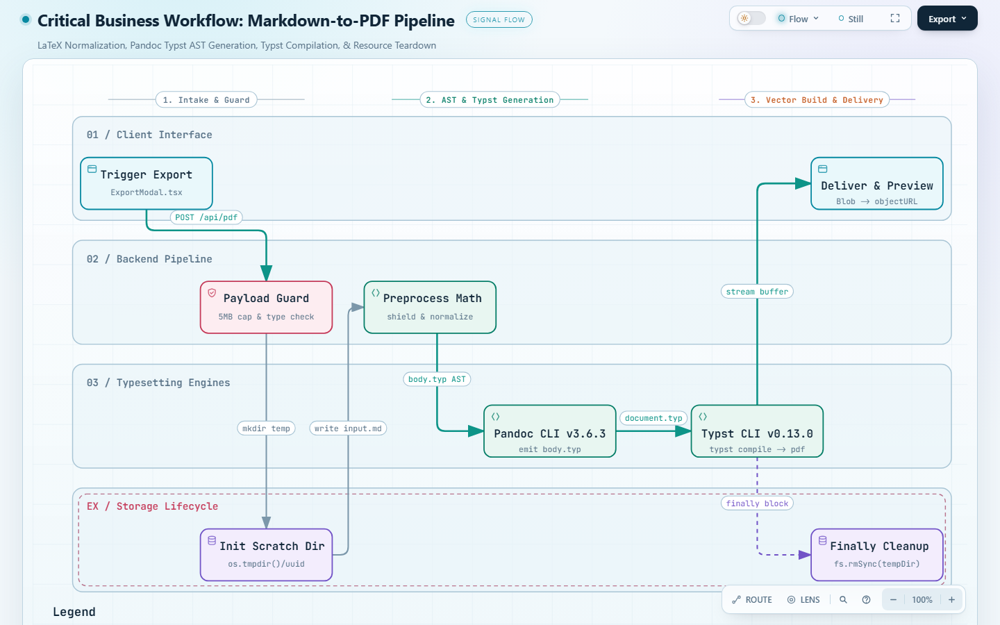

Interactive Visual Architecture Suite
9 verified, interactive Archify diagrams capturing the entire end-to-end ecosystem with dark/light modes, trace animations, and high-resolution exports.

1. Complete System Architecture
High-level ecosystem map detailing user interaction, the local-first client browser sandbox, Nginx reverse proxy, Express API router, and containerized Pandoc/Typst compilation core.

2. End-to-End Request Journey
Step-by-step sequence tracing the export journey: modal trigger, HTTP transport, ephemeral UUID workspace generation, Pandoc Markdown-to-Typst parsing, vector compilation, and binary stream delivery.

3. Frontend Architecture
React 18 single-page application structure: App view switcher, EditorPage state controller, CodeMirror 6 markdown integration, LivePreview KaTeX renderer, and modal controllers.

4. Backend Architecture
Express 4 server pipeline: CORS origin guards, 25MB body parser, healthcheck binary resolver (utils/paths.ts), PDF converter service, Typst preset generator, and error handling middleware.

5. Database ERD
Physical schema of client Browser IndexedDB (paperflow_db, store: documents), LocalStorage preferences, HTTP wire transfer DTOs (ExportPdfRequest), and ephemeral scratchpad files.

6. Authentication & Security Model
Lifecycle analysis of PaperFlow's zero-knowledge local-first trust architecture: anonymous client sessions, strict 5MB payload validation, unprivileged container execution, and zero-retention teardown.

7. Deployment & Infrastructure
Deployment topology covering the 3-stage multi-platform Dockerfile, Docker Compose CPU/memory ceilings (2.0 CPUs, 2GB RAM), Nginx reverse proxy configuration, and Render.com cloud specs.

8. Data Flow Architecture
End-to-end data pipeline tracking how user keystrokes enter, get processed by KaTeX in the browser DOM, flow over HTTP JSON, get normalized, compiled by Pandoc/Typst, and delivered as vector binary.

9. Critical Business Workflow
Execution workflow of the core Markdown-to-PDF conversion: code shielding, delimiter normalization, LaTeX environment wrapping, Pandoc AST generation, Typst formatting, and guaranteed cleanup.